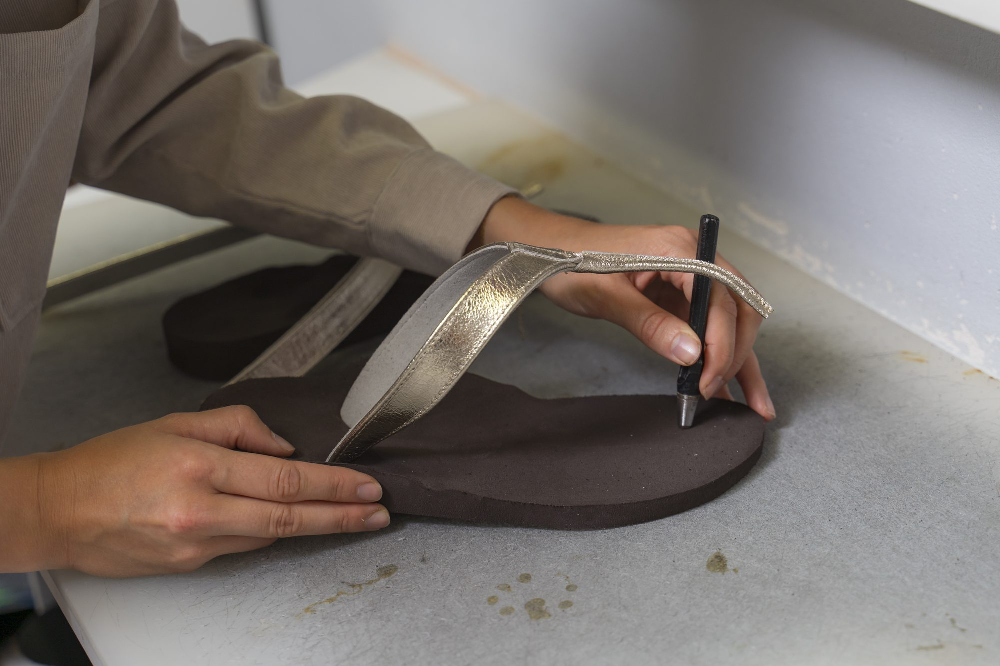
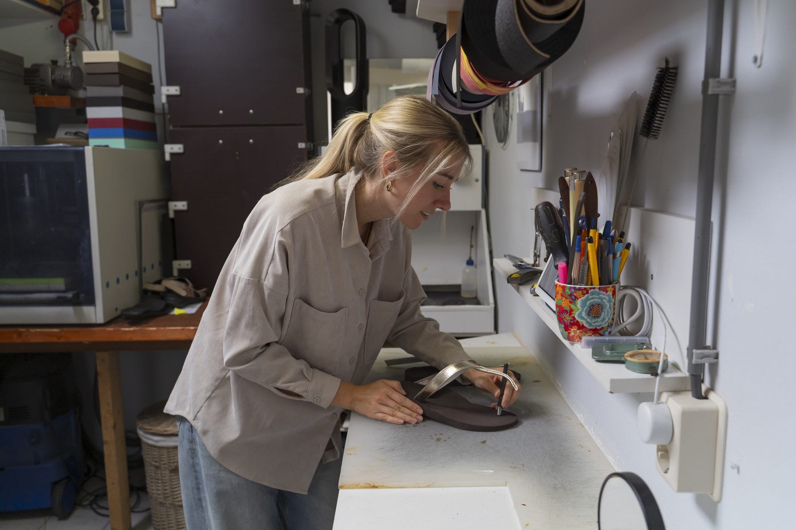
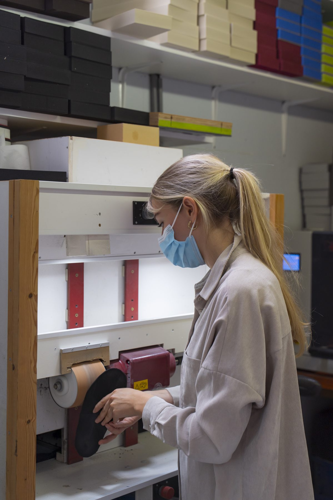
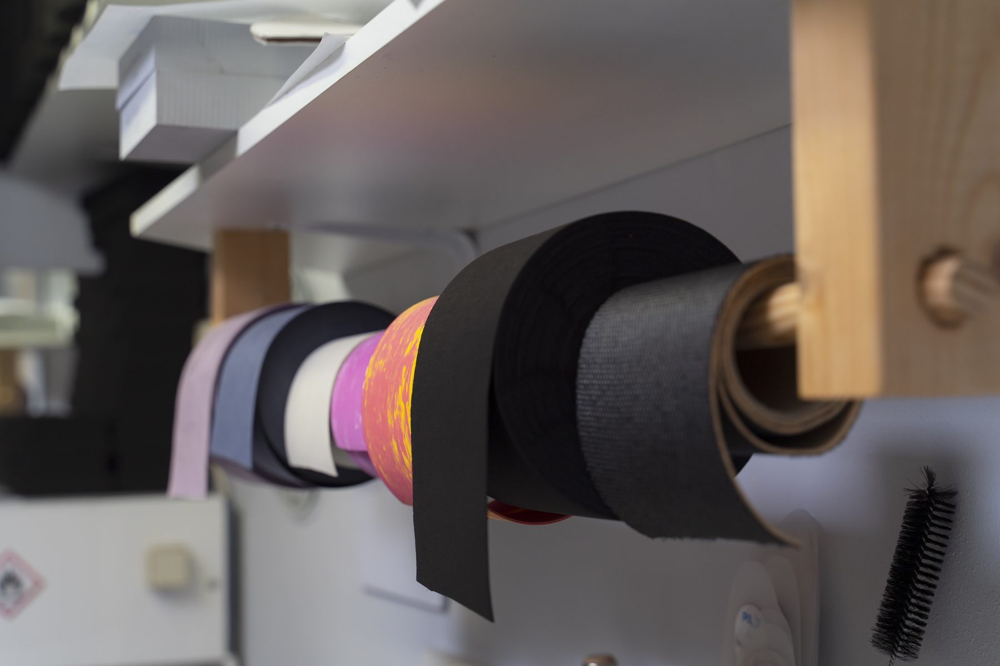
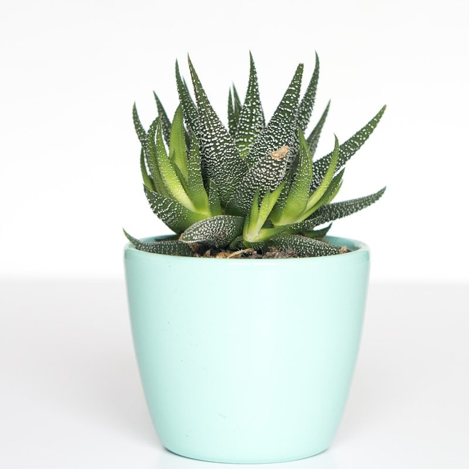
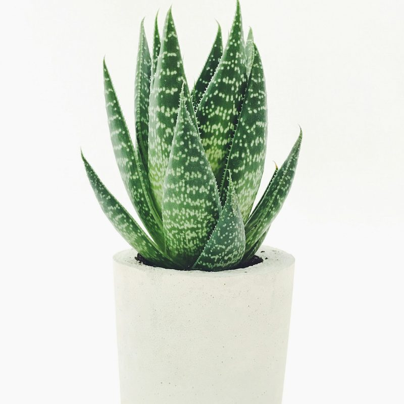

Op maat gemaakt
Maatslippers
Van uw eigen podotherapeutische zool maken wij een prachtige maatslipper — net zo therapeutisch als uw steunzool, maar dan voor op blote voeten.

Handwerk
Hoe maken wij uw maatslipper?
Uw maatslipper wordt gemaakt op basis van dezelfde 3D-scan die we ook voor uw podotherapeutische zolen gebruiken. Zo behoudt de slipper precies de drukverdeling en correctie die uw voet nodig heeft.
Elke slipper wordt vervolgens met de hand afgewerkt in onze eigen werkplaats: van het schuren van de zool tot het bevestigen van het bandje in de kleur en het materiaal van uw keuze.


Voorbeelden
Een greep uit ons werk
Stijlvol en therapeutisch tegelijk — van volledig eigen ontwerp tot een steunzool in uw eigen sandaal.
Ontworpen door VoetSelect

Uw eigen sandaal + onze steunzool

Benieuwd wat wij voor u kunnen maken?
Maak een afspraak en ontdek wat een maatslipper voor uw voeten kan betekenen.